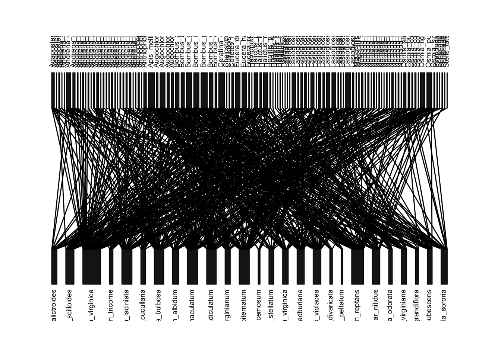
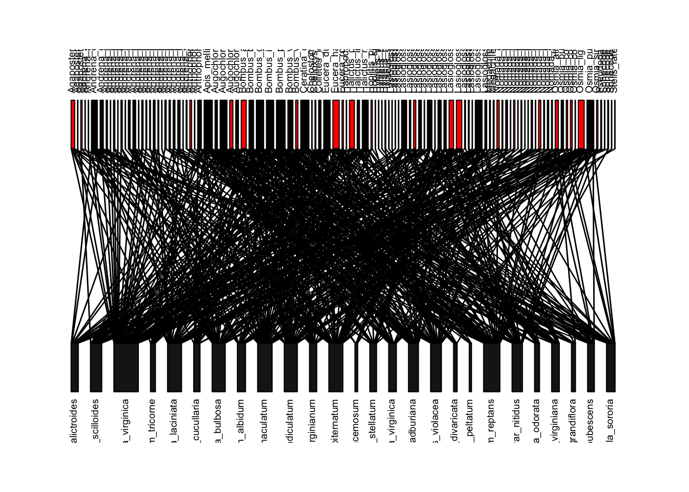
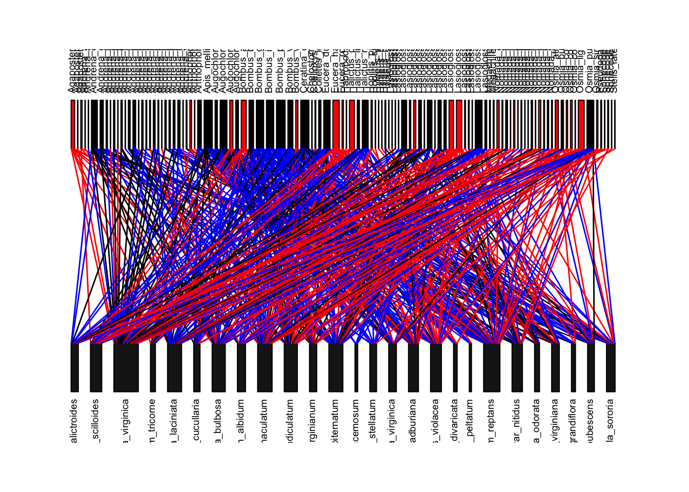
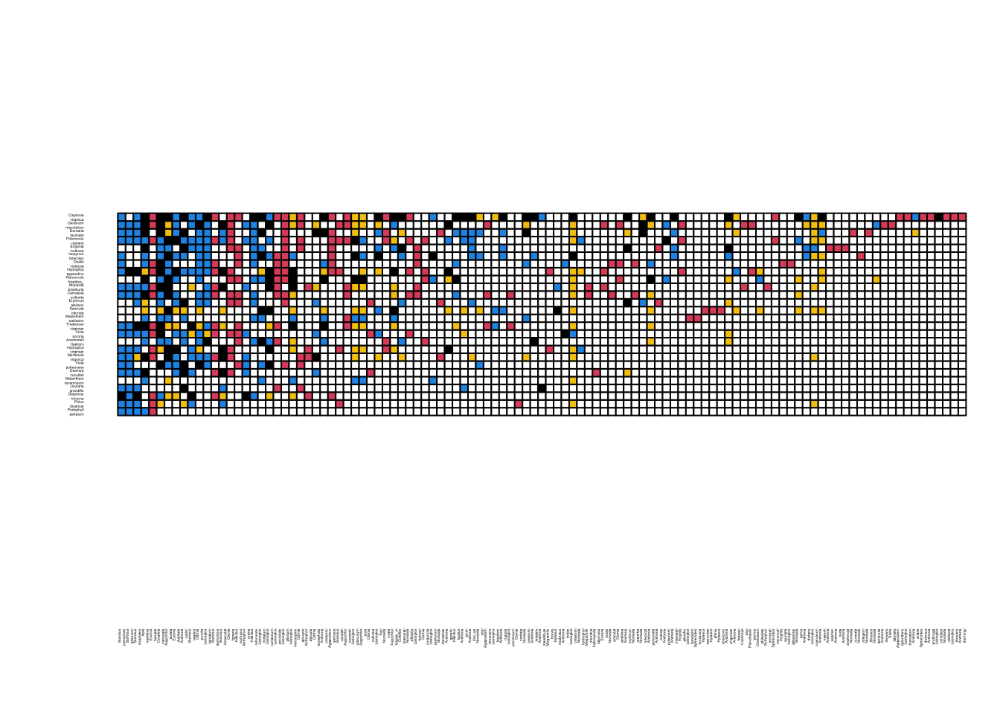

In 2009-2010, Laura Burkle and colleagues resampled a plant-bee network that was originally sampled by Charles Robertson in the 1800s (Robertson 1929). This allowed them to compare the mutualism network at this site 120 years apart (Burkle et al. 2013)! What they found is pretty astounding:
Half of the bee species were locally extinct, leading to massive loss of interactions. Many other interactions between plant species and bee species that were still surviving also disappeared. In total, only 24% of the original interactions were intact.
However, there were also 121 new interactions that were not observed by Robertson.
A lot of the loss of interactions were due to extinction of bee species
A lot of other changes in the network edges occurred because of the shift in phenology of plants and pollinators.
Across time, there can be massive rewiring of the mutualism network.
This leads to big changes in network structure, such as nestedness. Here, we will take the data presented in this paper to reconstruct two key figures and one analysis. First, we will load the R packages and the network data collected in 2009-2010, which is available on Dryad: http://datadryad.org/resource/doi:10.5061/dryad.rp321. We can import the data directly using the correct link address for the .csv file:
library(igraph)
library(bipartite)
new.el=read.csv("SampleData/Burkle2013/dryad - interactions now.csv")
head(new.el)## plant bee X.sum.ints
## 1 Dentaria_laciniata Andrena_arabis 2
## 2 Claytonia_virginica Andrena_carlini 64
## 3 Dentaria_laciniata Andrena_carlini 17
## 4 Dicentra_cucullaria Andrena_carlini 3
## 5 Erigenia_bulbosa Andrena_carlini 118
## 6 Erythronium_albidum Andrena_carlini 14You can see that this data frame is an edge list–it has the two connected nodes in two columns, and edge weights in a third column. We will ignore the edge weights for this exercise because I don’t have access to the edge weights for the Robertson’s original network (that data was not deposited in the database).
I have, however, compiled the unweighted network from Robertson’s original data using the published figure showing the interactions between plant and bee species (Figure S9A). You can download that data, as well as the ordering of the plant and bee species in that figure:
old.el=read.csv("SampleData/Burkle2013/old_edgelist.csv")
head(old.el)## plant bee edge
## 1 Claytonia_virginica Bombus_pensylvanicus 1
## 2 Geranium_maculatum Bombus_pensylvanicus 1
## 3 Isopyrum_biternatum Bombus_pensylvanicus 1
## 4 Dentaria_laciniata Bombus_pensylvanicus 1
## 5 Polemonium_reptans Bombus_pensylvanicus 1
## 6 Oxalis_violacea Bombus_pensylvanicus 1Let’s now convert both the new network and old network from edge lists to interaction matrices, with plants on rows and bees on columns. We can do this simply using the table() function and converting it to a matrix (output not shown):
new.bip=as.matrix(table(new.el[,1:2]))
old.bip=as.matrix(table(old.el[,1:2]))We will now use the ‘bipartite’ package to visualize the “old” network from Robertson’s data:
plotweb(old.bip, method="normal", text.rot=90) #method='normal' preserves the order of species in matrix (currently alphabetical)
Now, let’s try to recreate Figure 1 of the paper, which is this network colored by whether the bee species is now locally extinct (red boxes), whether the interaction is gone because the bee species is gone (red lines), or the interaction is gone for some other reason (blue lines). First, we can figure out if the bee species is gone by comparing the column names of the ‘old’ interaction matrix and the ‘new’ interaction matrix–if it is in the old but not the new, then it is gone (output not shown).
extinctbees=colnames(old.bip)[is.na(match(colnames(old.bip), colnames(new.bip)))] #the match function in the bracket returns NA if the name is in old network but not the new network. extinctbeesWe can use this list of bee species to color these boxes red in the network plot:
bee.colors=rep("black", length(colnames(old.bip)))
bee.colors[match(extinctbees, colnames(old.bip))]='red'
plotweb(old.bip, method="normal",text.rot=90, col.high=bee.colors)
To color the lines, we have to first know that the plotweb() function
allows you to color the interactions using the argument
col.interaction=. First, let’s create an empty matrix for
the line colors where we will assign the colors. These will have row and
column names that correspond to the “old” interaction matrix.
linecols=matrix(nrow=nrow(old.bip), ncol=ncol(old.bip), dimnames=dimnames(old.bip))We will now start assigning colors to interactions.
We will assign the color red to interactions that involve bee species that do not appear in the new dataset (locally extinct). We will do this by assigning the color ‘red’ to all interactions that correspond to columns of bees that go locally extinct.
We will then color all interactions that occur in both old and new datasets as black. To do this, we will construct a combined interaction matrix using both the old AND new edge lists. The interactions whose value = 2 in this combined matrix are interactions that exist in both datasets.
We will color the remaining interactions blue–these are ones that exist in the old network but do not exist in the new network, but do not correspond to columns with extinct bees.
Finally, let’s set all of the interactions that actually do not exist in the network to NA.
#color all columns with bees that will disappear in the new dataset = "red"
linecols[,match(extinctbees, colnames(linecols))]="red"
#make combined interaction matrix, and interactions that have 2 = exist in both datasets = "black"
total.el=rbind(old.el[,1:2], new.el[,1:2])
total.bip=as.matrix(table(total.el$plant, total.el$bee))
linecols[which(total.bip==2)]="black"
#the rest of the interactions will be colored "blue"
linecols[is.na(linecols)]="blue"
#set the interactions that do not exist in the old network to NA
linecols[which(total.bip==0)]=NA
#now plot
plotweb(old.bip, method="normal",col.interaction=t(linecols), bor.col.interaction=t(linecols), text.rot=90, col.high=bee.colors)
This looks almost exactly like Figure 1 in the paper. The main differences come from the fact that the published figure includes edge weights, but ours do not (because I did not have access to the edge weight data from the ‘old network’).
Figure two is a colored matrix that displays similar information as Figure 1, but with addition of new interactions (in yellow) that did not exist in the old dataset but appear in the new dataset.
We can start this process using the ‘linecols’ matrix we created above. The only information that this matrix lacks is the new interactionsthe interactions that exists in the new network but not the old network. We can figure out these interactions by using the combined interaction matrix we created above (total.bip). If we set all values >0 in this matrix to 1 (i.e., convert all 2 to 1), and then subtract it from the ‘old’ interaction matrix, then all the new interactions will have the cell value = 1:
total.bip[total.bip>0]=1
linecols[which(old.bip-total.bip==-1)]="yellow"Now, we will convert this matrix of color names to numerics corresponding to their color assignments as determined in base R (white = 0, black = 1, red = 2, blue = 4, yellow = 7). Once we do that, we will have to convert all of these cell values from “character” to “numeric”.
linecols[is.na(linecols)]=0
linecols[which(linecols=="black")]=1
linecols[which(linecols=="red")]=2
linecols[which(linecols=="blue")]=4
linecols[which(linecols=="yellow")]=7
linecols=matrix(as.numeric(linecols), nrow=nrow(old.bip), ncol=ncol(old.bip), dimnames=dimnames(old.bip))Finally, we want to reorder the rows and columns here to match the figure, which is based on their “nestedness position” (Figure 2 caption). I actually could not recreate this because they do not explain this ordering any furtherso I will have to cheat and simply import the species order here as a separate .csv file:
fig.order=read.csv("SampleData/Burkle2013/Fig2_order.csv")
row.order=fig.order[match(rownames(linecols),fig.order$species), "order"]
col.order=fig.order[match(colnames(linecols),fig.order$species), "order"]
linecols.ordered=linecols[order(row.order), order(col.order)] #matrix with the species sorted as in Figure2Now, we can use the visweb() function in bipartite package to generate Figure 2
colset=c(0, 1,2,4, 7) #sets the color according to cell values in increasing order
visweb(linecols.ordered, "none",square="defined", def.col=colset, clear=F) #def.cols= argument means use the defined color set
Let’s now calculate some specific numbers that tell us about the changes in the plant-bee network at this location over 120 years. The numbers here are very slightly different from what is reported in the paper–I think this is due to the fact that there are two bee species in Figure 2 of the paper that is not found in the dataset. I don’t know where that discrepancy comes from, but it does not impact the result very much. Here are some examples exploring the differences in the networks (outputs not shown):
table(linecols) # table showing frequencies of cell types ## linecols
## 0 1 2 4 7
## 2172 121 182 230 129table(linecols)[1]/sum(table(linecols)) #proportion of species pairs that never interact## 0
## 0.7664079table(linecols)[2]/sum(table(linecols)[c(2,3,4)]) #proportion of interactions existing in old network that persisted to new network## 1
## 0.2270169table(linecols)[5] #number of new interactions## 7
## 129table(linecols)[5]/sum(table(linecols)[c(2,5)]) #proportion of new network links that were new.## 7
## 0.516